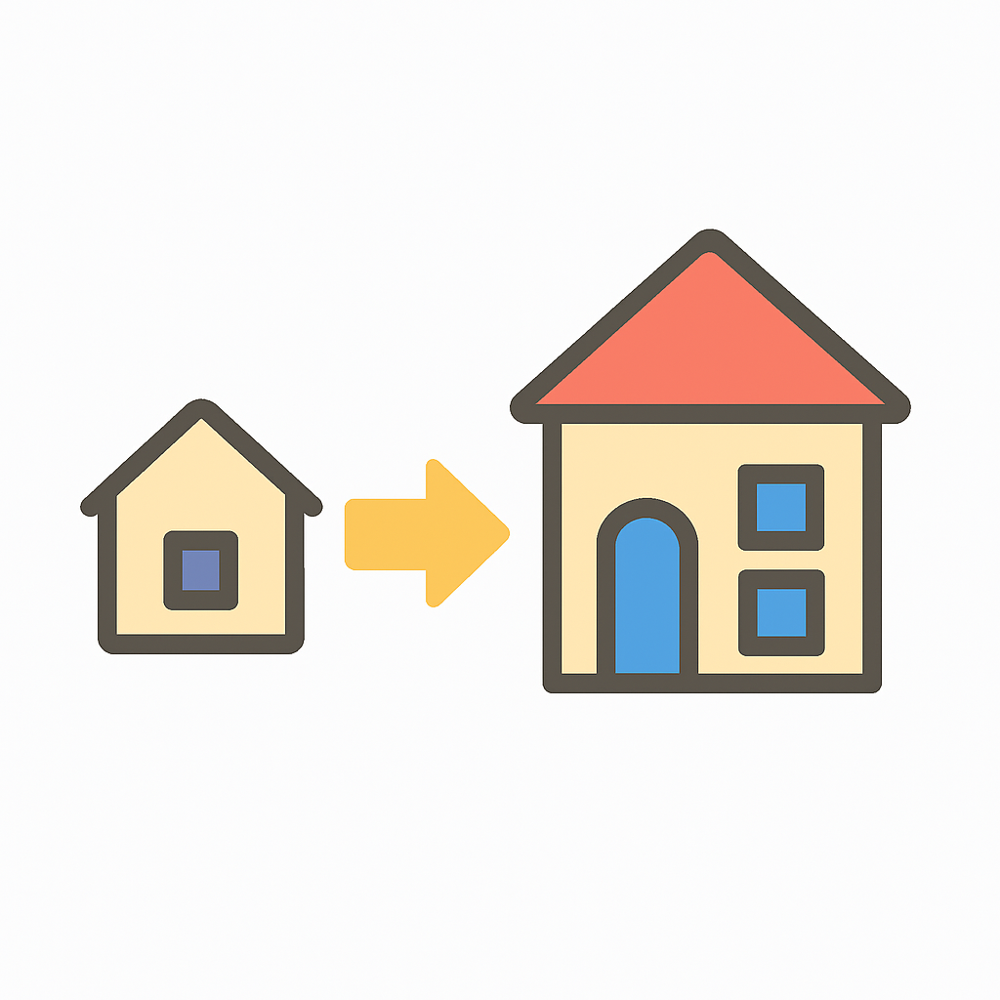

💬 왜 이 프로젝트를 시작했을까?
- 내 예산 13만 달러… 대출까지 20만 달러 마련!!
- 이 돈으로 살 수 있는 최적의 옵션은 뭘까?
- 내가 원하는 옵션을 선택했을 때, 예산 안에서 이사할 수 있는 집은 어디가 있을까?
| 변수명 | 한글 해석 | 설명 |
|---|---|---|
SalePrice
|
판매 가격 | 실제 거래된 주택 가격 (목표 변수 y) |
MSZoning
|
용도 지역 |
주택이 속한 구역의 용도 분류 (주거, 상업 등) 주거지역만 사용 (RH, RL, RM) |
LotArea
|
대지 면적 | 토지 면적 (제곱피트 단위) |
Utilities
|
사용 가능 시설 |
전기, 수도, 가스 등의 이용 가능 여부 Allpub 제외 삭제 |
Neighborhood
|
이웃 지역 | Ames 시의 물리적 구역 구분 |
BldgType
|
주택 유형 | 단독주택, 연립주택 등 구조 유형 |
OverallQual
|
전반적 자재 품질 | 자재 및 마감 품질 (1~10점 척도) |
OverallCond
|
전반적 상태 | 유지 상태 등 건물 전반적인 평가 |
YearRemodAdd
|
리모델링 연도 | 최근 개보수 혹은 증축이 이루어진 연도 |
ExterQual
|
외장재 품질 | 외부 마감재의 품질 등급 |
ExterCond
|
외장재 상태 | 외부 마감재의 현재 상태 |
Foundation
|
기초 구조 | 건물의 기초 자재 유형 (콘크리트 등) |
BsmtQual
|
지하 품질 | 지하실의 높이 및 품질 |
BsmtCond
|
지하 상태 | 지하실의 전반적인 상태 |
TotalBsmtSF
|
지하 면적 | 전체 지하실 면적 (제곱피트) |
Heating
|
난방 방식 | 가스, 전기, 온수 등 |
HeatingQC
|
난방 품질 | 난방 방식의 품질과 상태 평가 |
CentralAir
|
중앙 냉방 | 중앙 냉방 시스템 유무 (Y/N) |
FullBath
|
전용 욕실 수 |
지상에 위치한 전체 욕실 개수 0개는 삭제 |
KitchenAbvGr
|
지상 주방 수 |
지상층에 위치한 주방 수 0개는 삭제 |
TotRmsAbvGrd
|
지상 방 수 | 지상층의 총 방 개수 (욕실 제외) |
Functional
|
주거 기능성 | 집의 기능적 결함 유무 및 평가 |
GarageCars
|
차고 차량 수용 | 차고에 주차 가능한 차량 수 |
GarageQual
|
차고 품질 | 차고 건축 품질 등급 |
GarageCond
|
차고 상태 | 차고의 현재 상태 |
OpenPorchSF
|
개방형 현관 면적 | 전면 개방된 포치(현관) 면적 |
PoolArea
|
수영장 면적 | 수영장이 있는 경우 그 면적 |
GeoRefNo
|
지리 참조 번호 | 위치 기반 고유 식별자 |
Latitude
|
위도 | 지리적 위치 정보 (위도) |
Longitude
|
경도 | 지리적 위치 정보 (경도) |
1️⃣ 품질 변수 전처리
- 대상 변수
- 외부자재:
ExterQual,ExterCond
- 지하실:
BsmtQual,BsmtCond
- 난방:
HeatingQC
- 차고:
GarageQual,GarageCond
- 외부자재:
- 변환 기준
등급 코드 의미 처리 점수 Ex Excellent (최상) 5 Gd Good (상) 4 TA Typical/Average (중) 3 Fa Fair (하) 2 Po Poor (최하) 1 None, nan, 0 해당 없음 0
qual_map_543210 = {
'Ex': 5, 'Gd': 4, 'TA': 3, 'Fa': 2, 'Po': 1,
'None': 0, 'nan': 0, '0': 0
}
qual_vars = [
"ExterQual", "ExterCond",
"BsmtQual", "BsmtCond",
"HeatingQC",
"GarageQual", "GarageCond"
]
for col in qual_vars:
df[col] = df[col].astype(str).replace(['nan', 'NaN', '0'], 'None')
df[col + "_Score"] = df[col].map(qual_map_543210)품질 변수가 Qual, Cond로 나누어져있는 경우 가중평균으로 하나의 품질변수로 통합
Qual,Cond변수와SalePrice상관관계 확인
df[["SalePrice", "OverallQual", "OverallCond"]].corr()
df[["SalePrice", "ExterQual_Score", "ExterCond_Score"]].corr()
df[["SalePrice", "GarageQual_Score", "GarageCond_Score"]].corr()
df[["SalePrice", "BsmtQual_Score", "BsmtCond_Score"]].corr()- ✔️ 상관관계 결과 확인 및 가중치 설정
| 새로운 파생변수 | 기존 변수 | 집값과의 상관계수 | 가중치 |
|---|---|---|---|
| Overall | OverallQual / OverallCond | 0.79 / -0.11 | 7 : 3 |
| Exter | ExterQual / ExterCond | 0.68 / 0.01 | 9 : 1 |
| Garage | GarageQual / GarageCond | 0.94 / 0.24 | 7 : 3 |
| Bsmt | BsmtQual / BsmtCond | 0.58 / 0.20 | 7 : 3 |
가중치 반영한 파생변수 생성 후 기존의
Qual, Cond 변수 삭제
df['Overall'] = df['OverallQual'] * 0.7 + df['OverallCond'] * 0.3
df['Exter'] = df['ExterQual_Score'] * 0.9 + df['ExterCond_Score'] * 0.1
df['Garage'] = df['GarageQual_Score'] * 0.7 + df['GarageCond_Score'] * 0.3
df["Bsmt"] = df["BsmtQual_Score"] * 0.7 + df["BsmtCond_Score"] * 0.3
cols_to_drop = [
'OverallQual', 'OverallCond',
'ExterQual', 'ExterCond',
'BsmtQual', 'BsmtCond',
'GarageQual', 'GarageCond',
'ExterQual_Score', 'ExterCond_Score',
'BsmtQual_Score', 'BsmtCond_Score',
'GarageQual_Score', 'GarageCond_Score',
'Latitude', 'Longitude','HeatingQC'
]
df = df.drop(columns=cols_to_drop)- 품질 관련 파생변수 확인
.head(5)
| Overall | Exter | Garage | Bsmt | HeatingQC_Score | |
|---|---|---|---|---|---|
| 0 | 6.0 | 3.0 | 3.0 | 3.0 | 3 |
| 1 | 5.0 | 3.9 | 3.0 | 3.7 | 3 |
| 2 | 5.2 | 4.0 | 3.0 | 2.3 | 4 |
| 3 | 7.4 | 3.9 | 3.0 | 3.7 | 5 |
| 4 | 6.4 | 3.9 | 3.0 | 0.0 | 5 |
2️⃣ 예산 필터링
- 내가 가진 돈은! 💸 13만 달러 이상, 20만 달러 이하
Text(0.5, 1.0, '집값 분포 (예산 필터링)')Text(0.5, 0, 'SalePrice')Text(0, 0.5, '건수')3️⃣ 회귀분석을 위한 데이터 전처리
- 종속 변수 y 분리:
SalePrice
- 독립변수 X: 수치형 + 범주형 분리
- 수치형:
StandardScaler()적용
- 범주형:
OneHotEncoder()적용
- 수치형:
- 수치형 + 범주형 데이터 합치기
from sklearn.preprocessing import OneHotEncoder, StandardScaler
import numpy as np
X = df.drop(columns='SalePrice')
y = df['SalePrice']
num_columns = X.select_dtypes(include=['number']).columns
cat_columns = X.select_dtypes(include=['object']).columns
onehot = OneHotEncoder(handle_unknown='ignore', sparse_output=False)
X_train_cat = onehot.fit_transform(X[cat_columns])
scaler = StandardScaler()
X_train_num = scaler.fit_transform(X[num_columns])
X_train_all = np.concatenate([X_train_num, X_train_cat], axis=1)우리는 예산 내에서 어떤 조건이 집값을 높이는 데 크게 기여하는지 파악하고자
수업시간에 배운 LassoCV 모델을 활용하여 분석을 진행했습니다.
🧪 분석 목표
- 내 예산 안에서는 어떤 집이 최고의 집일까?
- 변수 중요도를 계수로 시각화
- 예측 가격이 가장 높은 조합 도출
LassoCV(alphas=array([0. , 0.0005005 , 0.001001 , 0.0015015 , 0.002002 ,
0.0025025 , 0.003003 , 0.0035035 , 0.004004 , 0.0045045 ,
0.00500501, 0.00550551, 0.00600601, 0.00650651, 0.00700701,
0.00750751, 0.00800801, 0.00850851, 0.00900901, 0.00950951,
0.01001001, 0.01051051, 0.01101101, 0.01151151, 0.01201201,
0.01251251, 0.01301301, 0.01351351, 0.01401401, 0.01451451,
0.01501502, 0.015515...
0.48298298, 0.48348348, 0.48398398, 0.48448448, 0.48498498,
0.48548549, 0.48598599, 0.48648649, 0.48698699, 0.48748749,
0.48798799, 0.48848849, 0.48898899, 0.48948949, 0.48998999,
0.49049049, 0.49099099, 0.49149149, 0.49199199, 0.49249249,
0.49299299, 0.49349349, 0.49399399, 0.49449449, 0.49499499,
0.4954955 , 0.495996 , 0.4964965 , 0.496997 , 0.4974975 ,
0.497998 , 0.4984985 , 0.498999 , 0.4994995 , 0.5 ]),
cv=5)In a Jupyter environment, please rerun this cell to show the HTML representation or trust the notebook. On GitHub, the HTML representation is unable to render, please try loading this page with nbviewer.org.
LassoCV(alphas=array([0. , 0.0005005 , 0.001001 , 0.0015015 , 0.002002 ,
0.0025025 , 0.003003 , 0.0035035 , 0.004004 , 0.0045045 ,
0.00500501, 0.00550551, 0.00600601, 0.00650651, 0.00700701,
0.00750751, 0.00800801, 0.00850851, 0.00900901, 0.00950951,
0.01001001, 0.01051051, 0.01101101, 0.01151151, 0.01201201,
0.01251251, 0.01301301, 0.01351351, 0.01401401, 0.01451451,
0.01501502, 0.015515...
0.48298298, 0.48348348, 0.48398398, 0.48448448, 0.48498498,
0.48548549, 0.48598599, 0.48648649, 0.48698699, 0.48748749,
0.48798799, 0.48848849, 0.48898899, 0.48948949, 0.48998999,
0.49049049, 0.49099099, 0.49149149, 0.49199199, 0.49249249,
0.49299299, 0.49349349, 0.49399399, 0.49449449, 0.49499499,
0.4954955 , 0.495996 , 0.4964965 , 0.496997 , 0.4974975 ,
0.497998 , 0.4984985 , 0.498999 , 0.4994995 , 0.5 ]),
cv=5)Text(0.5, 1.0, 'Top 20 Important Features by Lasso Regression')| 분석 내용 | 설명 |
|---|---|
| Lasso 요약 | LassoCV 모델은 교차검증으로 최적의 alpha ≈ 0.5를 선택하고, 중요하지 않은 변수는 자동으로 제거함으로써 과적합을 방지하고 해석력을 높임. |
| 중요한 변수 Top 20 | Overall, GarageCars, GrLivArea, Exter, Bsmt, YearRemodAdd, Neighborhood 등이 상위 변수로 나타남. 대부분 구조/품질 관련 변수. |
| 변수 그룹별 영향력 | 계수 절대값 평균 기준 영향력 상위 그룹은 Overall, Garage, Bsmt, Exter, Neighborhood 순. |
| 예측된 최고의 집 조건 | Overall=10, GarageCars=3, GrLivArea>2000, Exter·Bsmt≥4.5, YearRemodAdd>2010, Neighborhood=‘NridgHt’ |
| 요약 결과 | 예산 130,000~200,000달러 내에서 가장 효율적인 조건은 Overall≥7.5, Exter·Garage·Bsmt≥4.0, GarageCars≥2, YearRemodAdd>2005, Neighborhood=‘Gilbert’, ‘SawyerW’ 등으로 분석됨. |
def find_best_home_within_budget(df, model, scaler, encoder, num_cols, cat_cols, budget):
"""
예산 내에서 가장 높은 예측 집값을 가지는 조건 조합을 찾음
Parameters:
- df: 전처리된 원본 데이터프레임
- model: 훈련된 LassoCV 모델
- scaler: 수치형 표준화 도구
- encoder: 범주형 인코더
- num_cols: 수치형 변수 리스트
- cat_cols: 범주형 변수 리스트
- budget: 예산 상한 (ex: 200000)
Returns:
- 최고 예측 가격과 해당 조건
"""
best_price = -np.inf
best_condition = None
# 예산 내 데이터만 사용
df_budget = df[df['SalePrice'] <= budget]
# 중복 제거된 후보 범주 조합만 추출
unique_combinations = df_budget[cat_cols].drop_duplicates().astype(str)
# 수치형 평균 고정
input_num = pd.DataFrame([df_budget[num_cols].mean()], columns=num_cols)
input_num_scaled = scaler.transform(input_num)
for _, row in unique_combinations.iterrows():
input_cat = pd.DataFrame([row], columns=cat_cols).astype(str)
encoded_cat = encoder.transform(input_cat)
X_input = np.concatenate([input_num_scaled, encoded_cat], axis=1)
predicted = model.predict(X_input)[0]
if predicted > best_price:
best_price = predicted
best_condition = row.to_dict()
return best_price, best_condition
# 함수 실행 (예산: $200,000)
best_price, best_condition = find_best_home_within_budget(
df, lasso_cv, std_scaler, onehot, num_columns, cat_columns, budget=200000
)
print(f"✅ 예측된 집값: ${best_price:,.0f}")
print("✅ 추천 조건:")
condition_df = pd.DataFrame([best_condition]).T
condition_df.columns = ['값']
display(condition_df)✅ 예측된 집값: $185,371
✅ 추천 조건:| 값 | |
|---|---|
| MSZoning | RL |
| Utilities | AllPub |
| Neighborhood | Gilbert |
| BldgType | 1Fam |
| Foundation | Slab |
| Heating | GasA |
| CentralAir | Y |
| Functional | Typ |
🎯 예산에 맞는 집은 많지만 모든 조건을 만족하는 집은 단 하나
⚠️ 만약 일부 옵션을 양보한다면?
💡 분석 질문
- 예산 안에서 가장 퀄리티가 좋은 집은 어떤 조합일까?
- 내가 원하는 옵션을 고수하면, 집 선택지는 얼마나 좁아질까?
- 조건을 일부 양보하면, 선택 폭은 얼마나 넓어질 수 있을까?
🔎 분석 과정 요약
1️⃣ 데이터 전처리
데이터 중 qual과 condition의 상관관계에 따라 가중치를 주어 새로운 변수를 생성하고, 예산 범위(13만~20만 달러)에 해당하는 집만 필터링
2️⃣ 회귀분석 (Lasso)
가격에 영향을 주는 주요 변수를 선택해, 어떤 조건이 집값을 높이는 데 가장 중요한 역할을 하는지 확인
3️⃣ 모델 예측
예산 내에서 모델이 추천하는 가장 가성비 좋은 조건 조합을 도출
4️⃣ 조건 완화 시나리오
일부 옵션을 양보했을 때 선택 가능한 집의 수가 어떻게 변화하는지 비교
| 항목 | 조건 |
|---|---|
| 용도 지역 | 저밀도 주거지역 (RL) |
| 이웃 (Neighborhood) | Gilbert |
| 주택 유형 | 1Fam (단독주택) |
| 기초 구조 | Slab |
| 난방 방식 | GasA |
| 난방 품질 | Gd |
| 중앙 냉방 | 있음 (Y) |
| 주거 기능성 | Typ (정상) |
| 예측된 집값 | 약 185,453 달러 |
이 프로젝트가 알려준 가장 큰 인사이트는,
1⃣ 상식적으로 중요하다고 생각했던 요소들이 실제로 가격에 얼마나 영향을 주는지를 확인해볼 수 있었다는 점.
→ 모델을 통해 영향이 큰 주요 변수를 확인할 수 있었다.
2⃣ 그 결과를 바탕으로 예산 안에서 가장 좋은 조건 조합을 찾는 모델을 만들 수 있었다는 점.
→ 우리가 설정한 예산 안에서
→ 모델이 예측한 가장 ‘가성비 좋은’ 집을 추천받을 수 있었다.
3⃣ 모든 조건을 만족하는 집을 찾기는 쉽지 않다
→ 중요한 것은 ’어떤 조건을 더 중요하게 볼 것인가’를 스스로 정하는 일이었다.
이 분석을 통해
→ 내가 어떤 요소를 더 중요하게 보고, 어떤 기준으로 선택을 할 것인지 그 생각을 구체화해볼 수 있었다.
